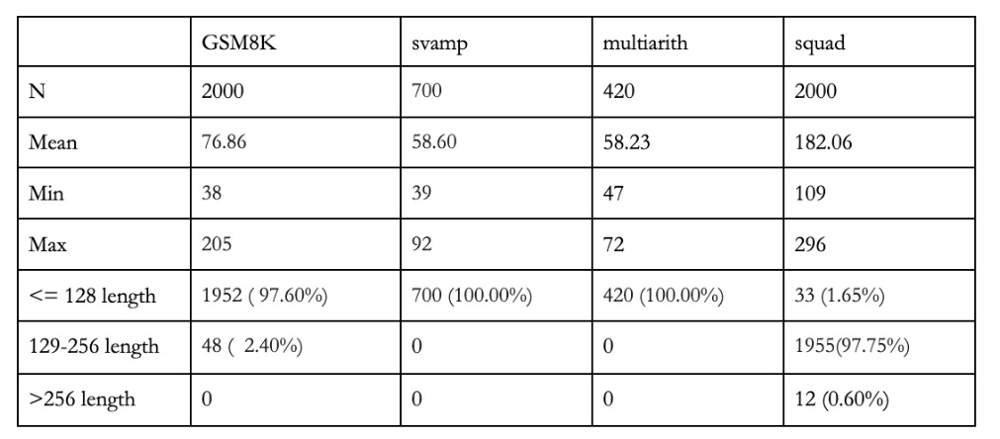
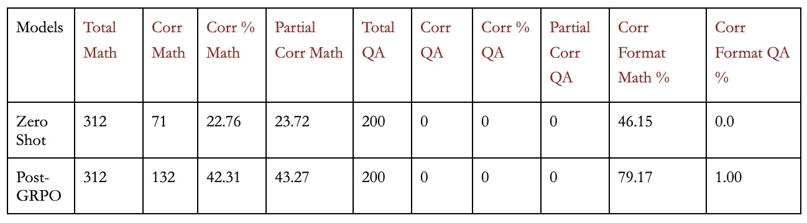

Post-training Gemma 3 on Tunix for Structured Reasoning Traces
Jan 2026
The goal of this project was to take an open-weight instruction tuned model (Gemma 3 1B IT) and fine-tune it so it reliably produced a structured reasoning trace before a final answer. To confirm that a model was outputting a thinking trace, each completion was to follow a string schema. A reasoning block wrapped in <reasoning> … </reasoning> and a single final numeric answer wrapped in <answer> ... </answer>.
Success was measured by format compliance and task correctness, both evaluated under pass@k sampling. I used regex as a cheap, deterministic validator for parsing answers.
This was also my first time entering the Jax/Flax/Tunix pipeline. I was befuddled by the ever-increasing names suffixed by “ax” that seemed to appear. A lot of this confusion was from not understanding the design philosophies of Pytorch vs JAX ecosystem. When you run a line of code in Pytorch, it executes on the GPU immediately (eager execution). JAX, however, often traces Python functions and compiles them via jit to XLA. That improves throughput but makes shapes/static arguments and memory planning much more efficient.
Training Architecture
The setup consists of 2 models. The actor model was a Gemma 3 1B IT model with LoRA adapters and the reference model was the same base weights frozen. The KL penalty is computed against the reference logits to ensure that the model’s distribution does not drift in too extreme a manner.We trained with a LoRA rank=64, alpha=64
For the RL stage, we utilized Group Relative Policy Optimization (GRPO). Unlike traditional PPO, which requires a separate value function, GRPO samples a group of completions per prompt and computes the advantage based on relative scores within that group. This method was particularly effective because our reward signals were deterministic and verifiable.
We used the following System Prompts and Templates:
SYSTEM_PROMPT = f"""You are given a problem. Think about the problem and provide your reasoning.
Place it between {reasoning_start} and {reasoning_end}.
Then, provide the final answer between {solution_start} and {solution_end}."""
TEMPLATE = """user
{system_prompt}
{question}
model""" TPU Troubleshooting
The first major issue was TPU HBM exhausting during compilation. This happens because RL training often needs full-token logits across long sequences to compute KL regularised objectives. We made the training step fit by reducing the largest drivers of [batch, tokens, vocab] tensors.
GRPO Datasets
We prepared a multi-modal dataset from GSM8K [1], svamp [2], MultiArith [3], and squad [4] where the first three are grade-school level math questions and the last is a QA style task. We appended a task-type header to each question to avoid model confusion with different test modalities. The context body for squad was concatenated to a window of 600 characters around the answer. These were our prompt token length statistics across the 4 datasets. These statistics exclude the system instruction.

With the system instructions, the longest prompt in the dataset was 345 tokens long, so we capped max_prompt_length at 384 and max_generation_length at 256. Below are randomly-selected questions from each dataset.

And finally, statistics on the evaluation dataset.
I heard that SFT was useful to stabilize the model’s GRPO runs and also helps with format compliance. I tried it in earlier runs, to get the model to adhere to the
The metrics they gave in the GRPO demo notebook were specific only to math questions, so I extended it slightly for the QA questions. The two things that we care about are format compliance (partially because it makes answer parsing easier and partially because it’s an easy way to ensure the model is thinking) and answer correctness.
I wasn’t sure how much to weigh format compliance vs answer correctness. Previous GRPO runs had deprived performance when I did strict gating. I think it’s because reward functions don’t necessarily convert into the 1-1 training signals for the model.
Evaluation Metrics
For answer correctness, we ask:
- Accuracy: Did any of the K sampled completions solve the task exactly?
- Partial Correctness: Did any of the K sample completions fall within a reasonable error threshold of the original answer?
To evaluate partial correctness, numerical answers are given a 10% allowance and the textual answers have to have an F1-score of above 0.8. F1 score is calculated as 2 * precision * recall / (precision + recall) where precision asks: Of tokens I predicted, how many were correct? and recall asks: Of gold tokens, how many did I cover?
For format compliance, I followed a less strict format. As we were using an instruction-tuned version of Gemma 3, its current behaviour outputs a short pre-amble before the reasoning tags. I decided to allow that pre-amble as long as it outputs the correct <reasoning> and <answer> tags in the correct order.
If no <answer> tags were present, we extracted either the first number in the response (for math questions) and otherwise skipped, and always skipped for QA responses.
The results are as follows:
Conclusions
Overall, GRPO nearly doubled math accuracy, but QA did not improve. The model often responded with messages like “I can’t see the context,” despite the prompt containing a context window. Because QA rewards were gated on producing a valid <answer> span, these “missing context” responses effectively received zero reward, which likely starved GRPO of a useful training signal on QA prompts. This suggests the main failure mode was that the model was failing to treat the provided context as present under the current prompt setup, leading it to default to a refusal response. I’m still confused why this happens because we checked the tokenized length distribution for QA prompts to confirm the context window was appearing to the model and explicitly delimit the context to the model. One possible future option is placing the question after the context, or possibly adding a small positive reward for producing <answer>...</answer> at all.
Code Availability here.